National Museum of Western Art Tokyo
국립서양미술관
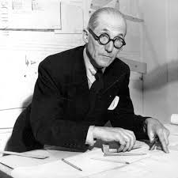
Le Corbusier르 코르뷔지에
ル・コルビュジエ · 1887–1965
Father of Modern Architecture
Atelier Le Corbusier
우에노역 공원 출구로 나오면, 나무들 사이에 별안간 콘크리트로 뒤덮인 건물이 보이기 시작합니다. 바닥부터가 콘크리트 슬라브로 묵직하게 깔려 있는 이곳은 유네스코 세계 문화유산으로 지정된 건축가 르 코르뷔지에의 '도쿄 국립서양미술관'입니다. 그는 우리가 지금 살고 있는 창밖의 모든 아파트와 현대 건축물의 탄생에 막대한 영향을 끼쳤으며, 아인슈타인, 에드윈 허블, 월트 디즈니 등과 함께 20세기를 대표하는 인물로 꼽힌 유일한 건축가이기도 합니다.
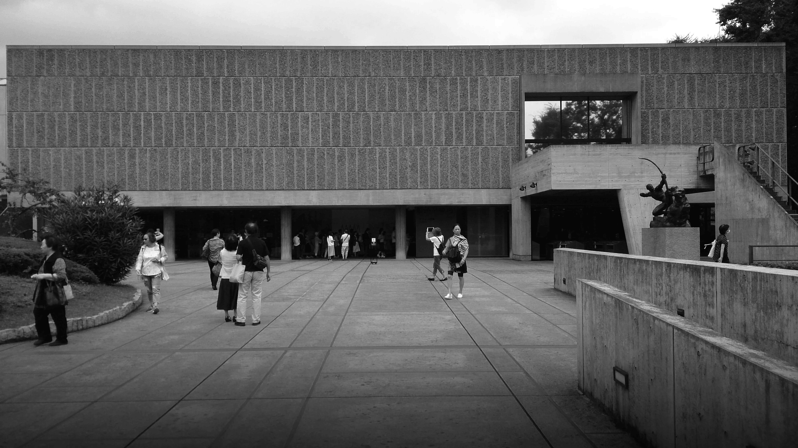
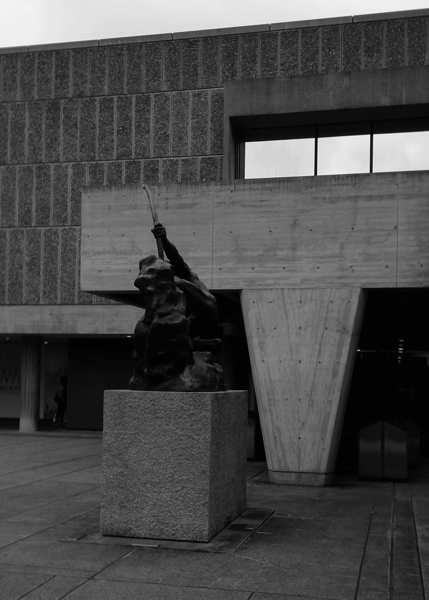
1959년에 만들어진 이곳은 세계 문화유산으로 지정된 르 코르뷔지에의 수많은 건축물 중 동북아시아에 위치한 유일한 건물로, 그가 정립한 모듈러, 근대 건축의 5대 원칙 등 여러 개념들이 곳곳에 적용되어 있습니다. 필로티의 그늘 아래 정문으로 들어가면 네모난 건물의 정중앙에 상설 전시장의 입구와 홀이 자리하고 있는데요. 삼각형으로 천장 가운데를 뚫어 체감상 더욱 높아 보이며, 그 비워진 자리로 기둥과 보가 드러나 있습니다. 이 모든 것들이 그의 독자적인 단위 체계인 모듈러에 의해 배치된 간격이라 하는데, 그냥 그런 거 모르고 봐도 점과 선, 면, 도형 그리고 공간이 한 자리에 있으니 마치 르 코르뷔지에가 "나 기하학 좋아해요"라고 대놓고 소리치는 느낌입니다.
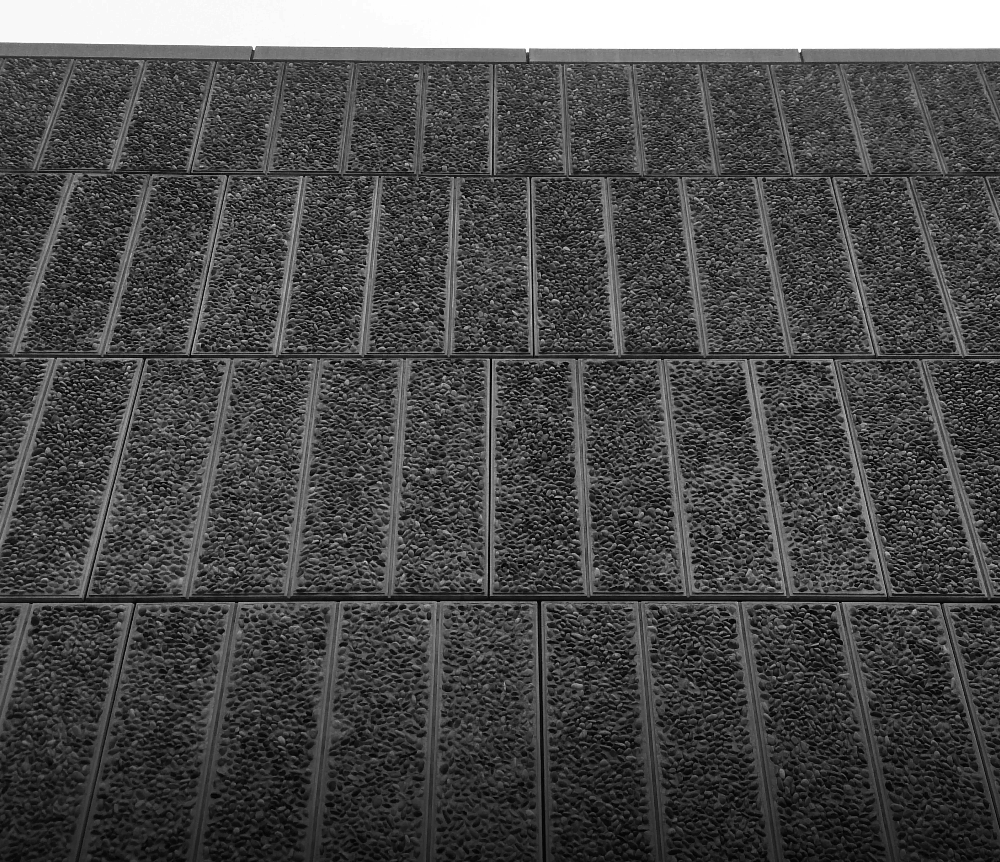
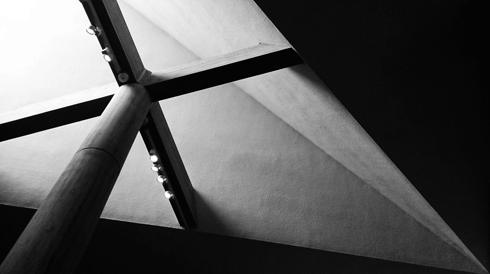
이 미술관의 구조적인 특징은 교묘하게 나선형으로 이어지는 전시장입니다. 이는 추후에 증축을 하기 위한 배열로, 미술관의 규모가 확장되면 확장될수록 건물 또한 나선형으로 무한히 확장될 수 있음을 염두에 둔 '무한 성장 미술관' 개념이죠. 신관 증축을 맡은 그의 제자들은 컨셉 그대로 연결하기보다는 옆에 별관을 따로 지어 연결했는데, 결과적으로 본관과 신관 사이에 중정이 만들어지며 미술관의 프로그램을 더욱 다양하게 만들었다고 생각됩니다.
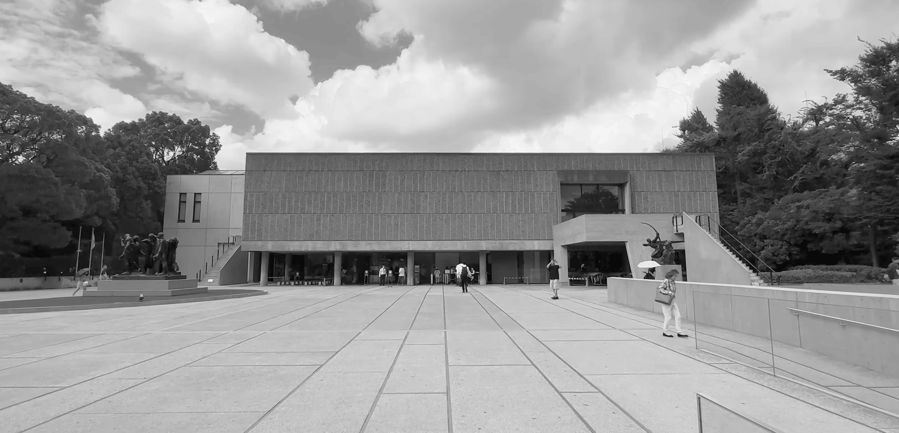
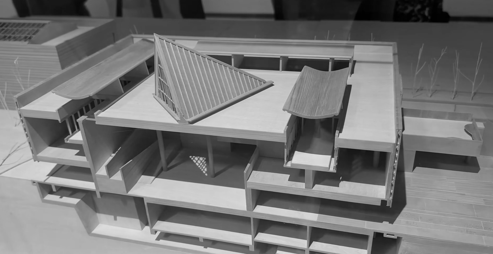
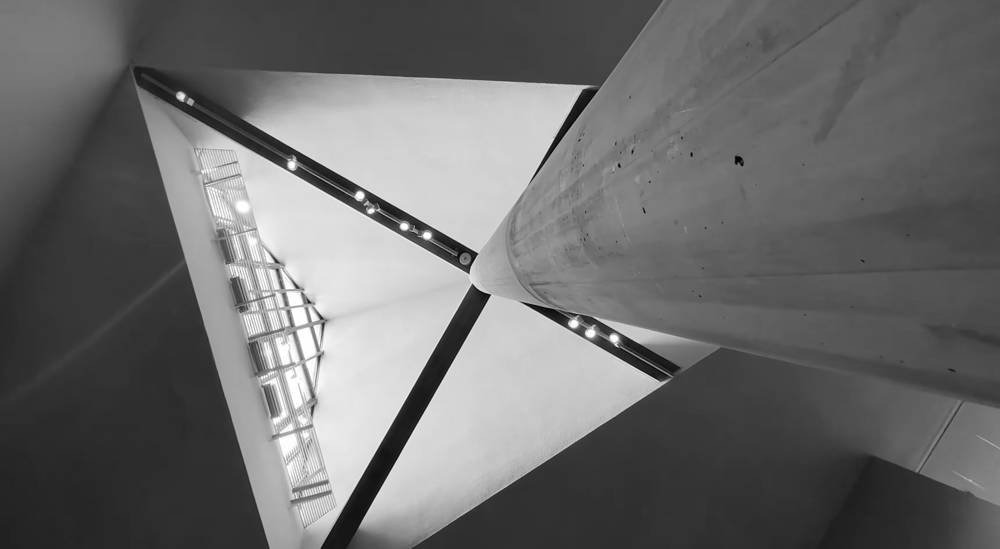
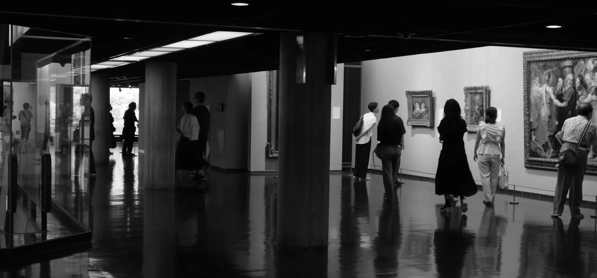
이 미술관에는 전시와 건축물 이외에도 주목할 관전 포인트가 몇 가지 있습니다. 건물이 1959년에 지어진 곳이기에 갈수록 엄격해지는 내진 설계 규제를 충족하기가 힘들었는데, 허물고 새로 올리자니 세간의 반대와 후환이 두려워 그 또한 쉽지 않았다고 합니다. 때문에 여러 차례 대대적인 내진 보수공사를 거쳐 재오픈했으며, 지하 휴게실에는 기둥마다 박힌 면진용 고무들을 볼 수 있는 작은 창이 뚫려 있습니다. 의미 있는 건축물을 길이길이 온전히 보존하고자 하는 그들의 진심이 느껴지는 공간이죠.
1층 상설전 출구 쪽 로비에는 르 코르뷔지에와 샤를로트 페리앙, 피에르 잔느레의 3인 합작인 의자 시리즈를 포함한 가구들이 전시되어 있습니다. 르 코르뷔지에의 '사람이 앉는 일곱 가지 자세' 스케치를 바탕으로 탄생한 이 의자들은, 오리지널의 가격대가 정말 어마어마하지만 여기에서는 마음대로 앉아볼 수 있습니다. 그 외에도 샤를로트 페리앙의 벤타글리오 테이블 등 쇼룸처럼 주기적으로 가구와 배치를 바꾸고 있어, 가구와 인테리어를 좋아하시는 분들께는 미술관에 더할 나위 없는 또 하나의 전시장이라고 할 수 있겠네요.
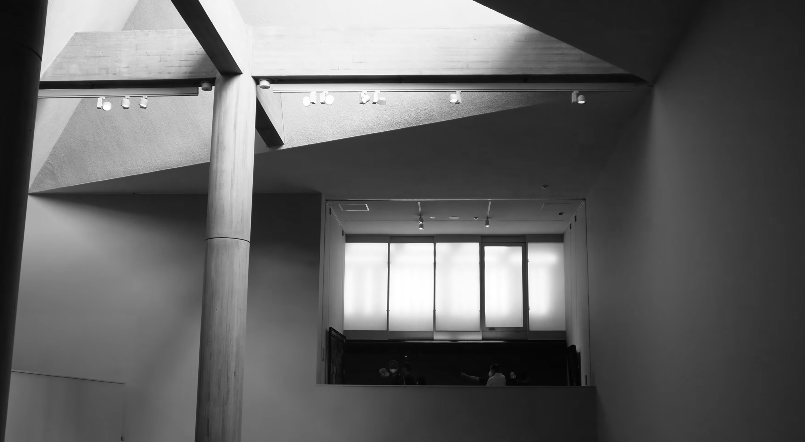
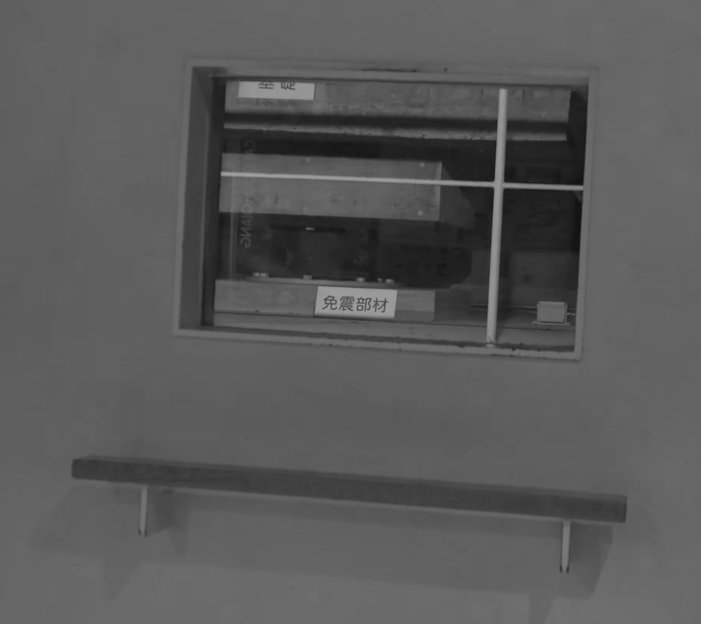
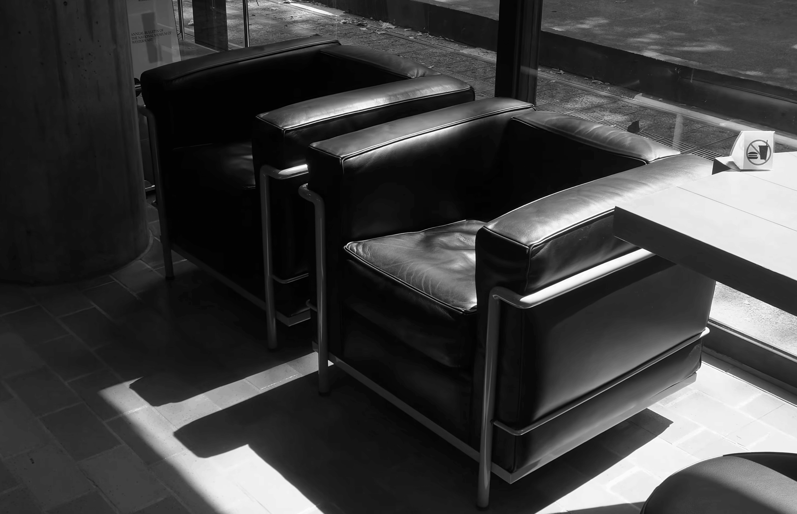
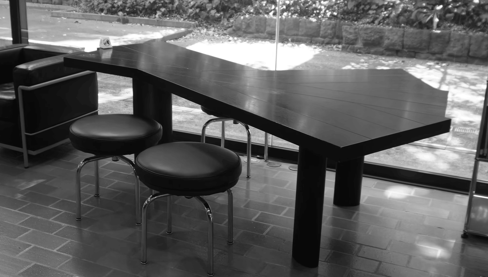
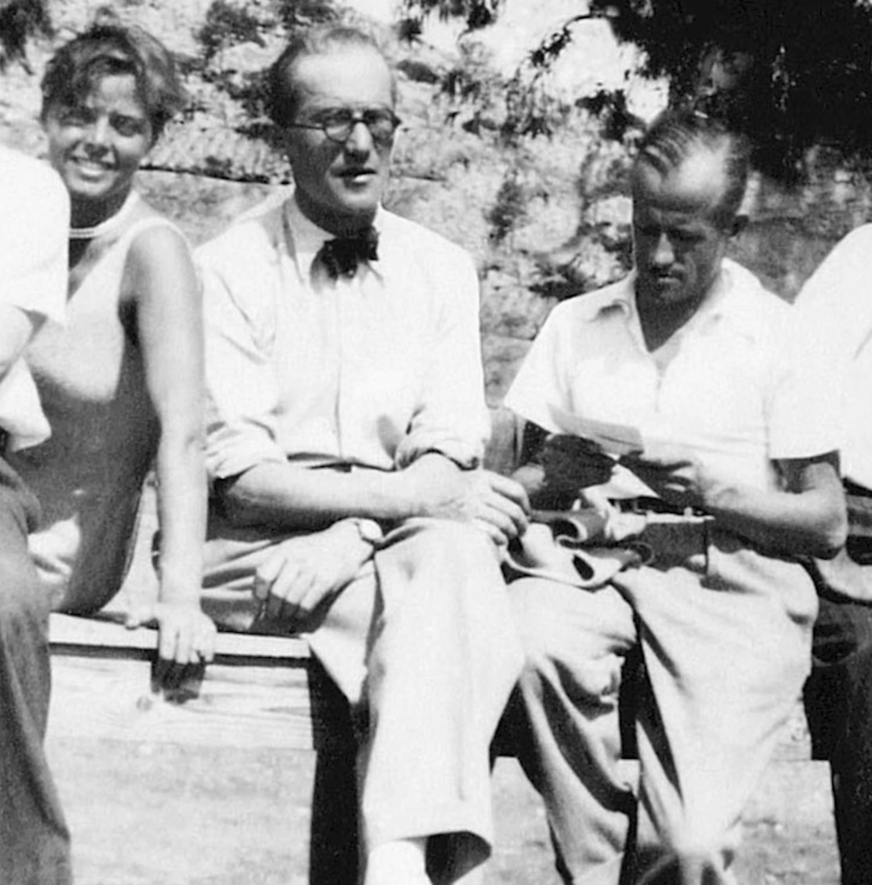